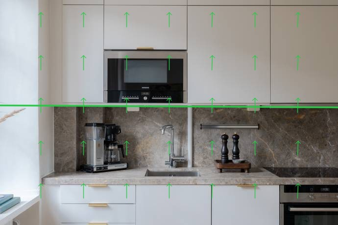
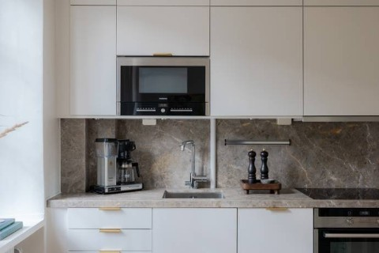
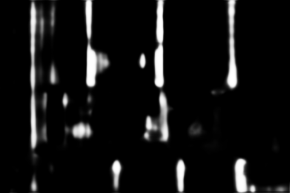
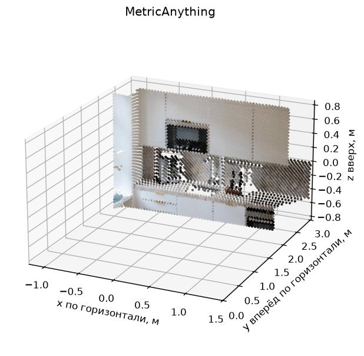
Вход GeoCalib — только RGB, pinhole без априорной K и гравитации. Эталон использован после инференса. Отказы остаются в знаменателе долей; средняя ошибка всей выборки при отказах недоступна. Это малый dev-пример, не бенчмарк. Holdout не использован. Вертикаль ARKitScenes получена из трекинга; Structured3D даёт точный синтетический эталон.
| Набор | Готово / всего | Эталон вертикали | Средняя ошибка, ° | Медиана, ° | Доля ≤5° | Медиана времени, с |
|---|---|---|---|---|---|---|
| photos | 23 / 23 | 0 | — | — | — | 0.150 |
Зелёный — GeoCalib, пурпурный — эталон. Стрелки направлены вверх; горизонт может находиться за пределами фото. Неопределённости сохранены в единицах углов/пикселей; их калибровка не проверена. Карты уверенности — веса сети, не вероятность верного результата.
В образце Blueprint пять коллажей вручную разделены на отдельные фото. План и смысл имён не подаются инструменту.
Параметры и хеши · Результаты · Сводка
Крен -0.37°, тангаж -0.87°; f = 846.1 px. Оценка неопределённости вертикали: 3.02°. Время 0.168 с; шагов оптимизации 6. Полные массивы и ковариация NPZ (массив хранится локально).
Интерактивное облако с вертикалью · Исходное облако без вертикали. Сохранённые XYZ, масштаб и K моделей глубины не изменены. Ко всем источникам применён один поворот GeoCalib; эталонная вертикаль не используется для подгонки. Высота пола и общий поворот разных фото не определены.




Крен -0.02°, тангаж 0.03°; f = 443.5 px. Оценка неопределённости вертикали: 1.59°. Время 0.129 с; шагов оптимизации 3. Полные массивы и ковариация NPZ (массив хранится локально).
Интерактивное облако с вертикалью · Исходное облако без вертикали. Сохранённые XYZ, масштаб и K моделей глубины не изменены. Ко всем источникам применён один поворот GeoCalib; эталонная вертикаль не используется для подгонки. Высота пола и общий поворот разных фото не определены.

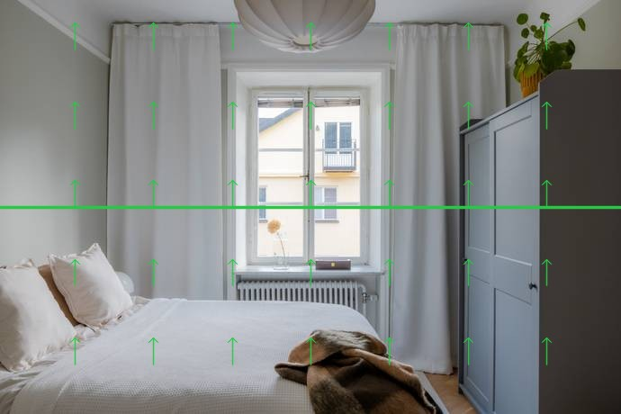
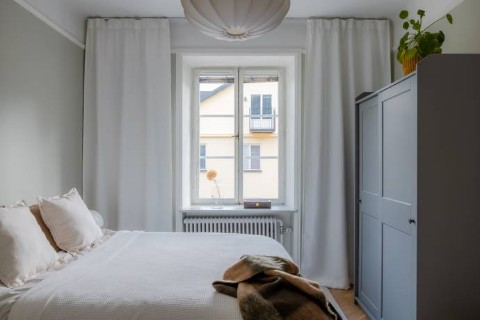
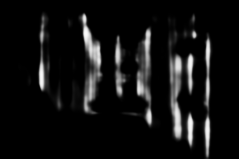
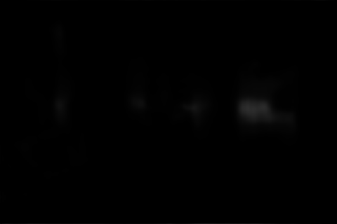
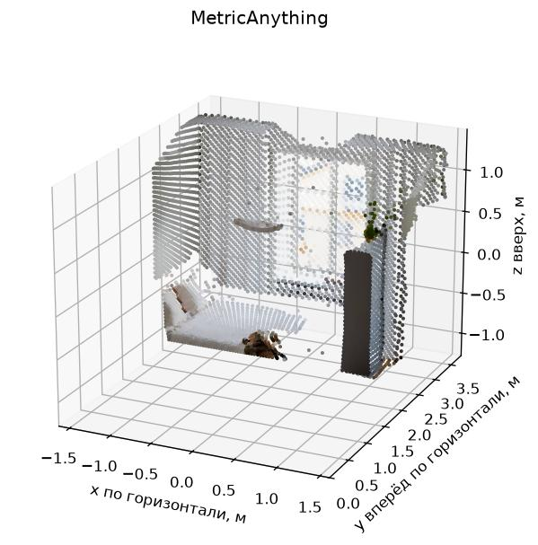
Крен -0.09°, тангаж -0.57°; f = 382.8 px. Оценка неопределённости вертикали: 2.46°. Время 0.271 с; шагов оптимизации 4. Полные массивы и ковариация NPZ (массив хранится локально).
Интерактивное облако с вертикалью · Исходное облако без вертикали. Сохранённые XYZ, масштаб и K моделей глубины не изменены. Ко всем источникам применён один поворот GeoCalib; эталонная вертикаль не используется для подгонки. Высота пола и общий поворот разных фото не определены.
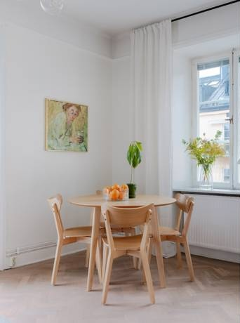
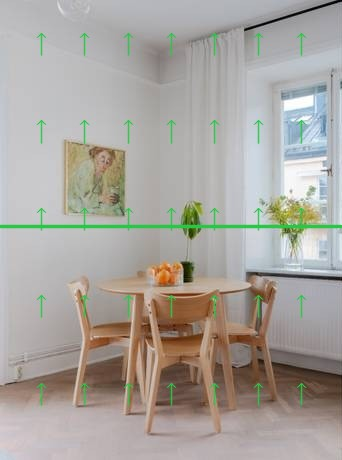
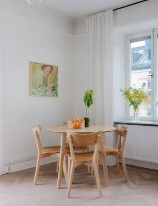
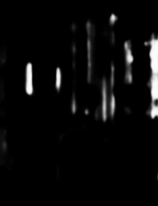
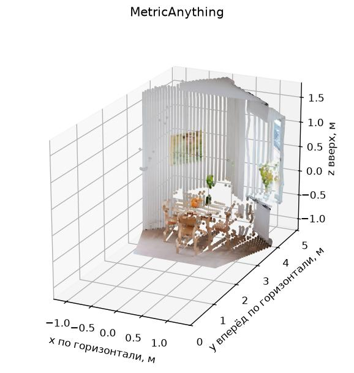
Крен -0.09°, тангаж 0.11°; f = 299.8 px. Оценка неопределённости вертикали: 2.32°. Время 0.123 с; шагов оптимизации 3. Полные массивы и ковариация NPZ (массив хранится локально).
Интерактивное облако с вертикалью · Исходное облако без вертикали. Сохранённые XYZ, масштаб и K моделей глубины не изменены. Ко всем источникам применён один поворот GeoCalib; эталонная вертикаль не используется для подгонки. Высота пола и общий поворот разных фото не определены.

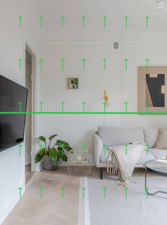
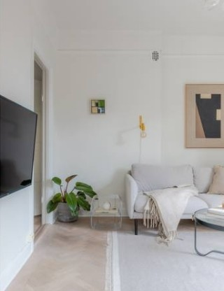
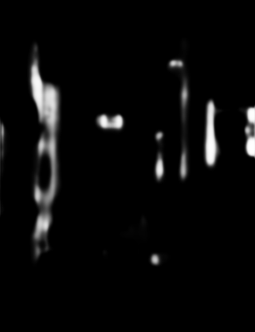
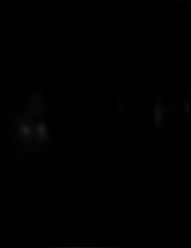
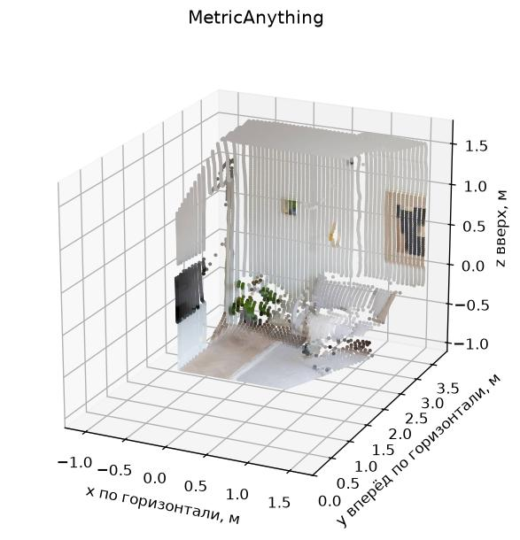
Крен -0.14°, тангаж 0.22°; f = 485.2 px. Оценка неопределённости вертикали: 0.99°. Время 0.132 с; шагов оптимизации 3. Полные массивы и ковариация NPZ (массив хранится локально).
Интерактивное облако с вертикалью · Исходное облако без вертикали. Сохранённые XYZ, масштаб и K моделей глубины не изменены. Ко всем источникам применён один поворот GeoCalib; эталонная вертикаль не используется для подгонки. Высота пола и общий поворот разных фото не определены.

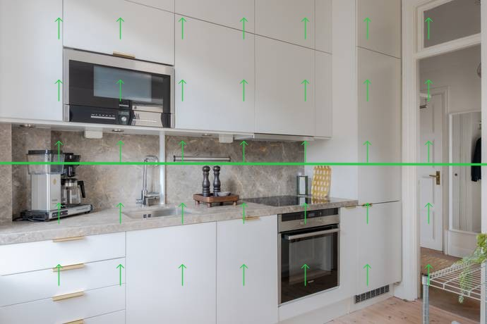
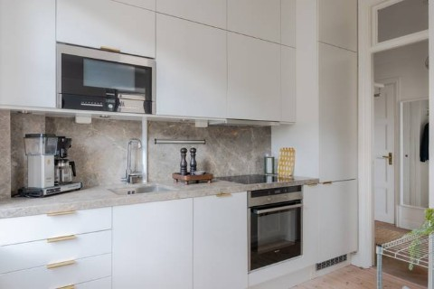
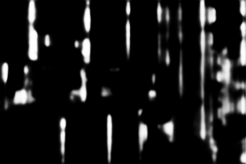
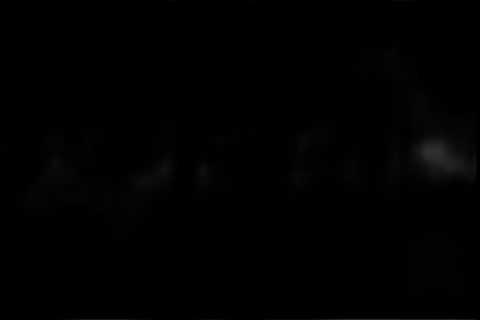
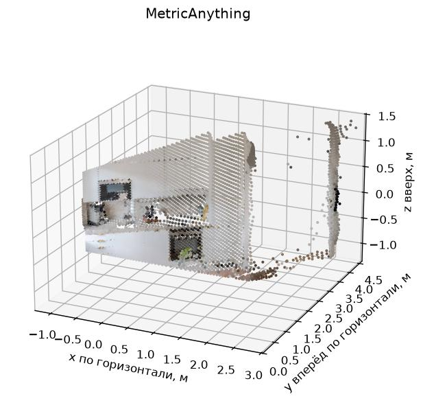
Крен -0.44°, тангаж -0.55°; f = 386.5 px. Оценка неопределённости вертикали: 2.07°. Время 0.174 с; шагов оптимизации 5. Полные массивы и ковариация NPZ (массив хранится локально).
Интерактивное облако с вертикалью · Исходное облако без вертикали. Сохранённые XYZ, масштаб и K моделей глубины не изменены. Ко всем источникам применён один поворот GeoCalib; эталонная вертикаль не используется для подгонки. Высота пола и общий поворот разных фото не определены.

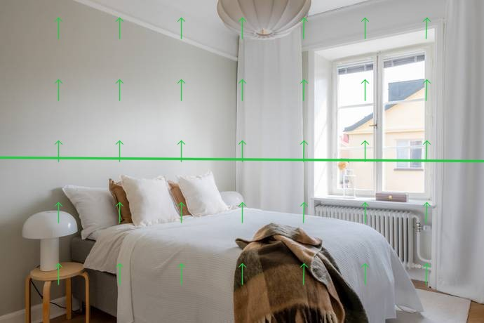
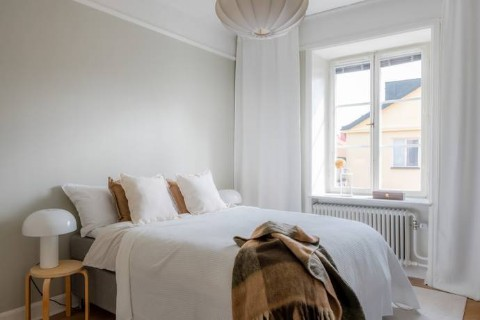
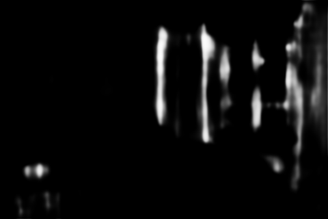
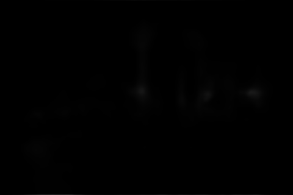
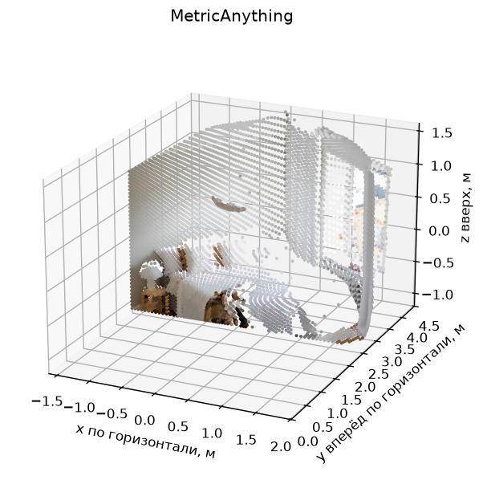
Крен -0.47°, тангаж 0.14°; f = 366.2 px. Оценка неопределённости вертикали: 1.23°. Время 0.165 с; шагов оптимизации 5. Полные массивы и ковариация NPZ (массив хранится локально).
Интерактивное облако с вертикалью · Исходное облако без вертикали. Сохранённые XYZ, масштаб и K моделей глубины не изменены. Ко всем источникам применён один поворот GeoCalib; эталонная вертикаль не используется для подгонки. Высота пола и общий поворот разных фото не определены.

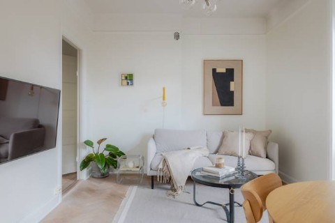
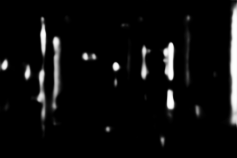
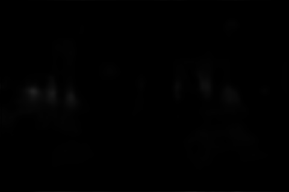
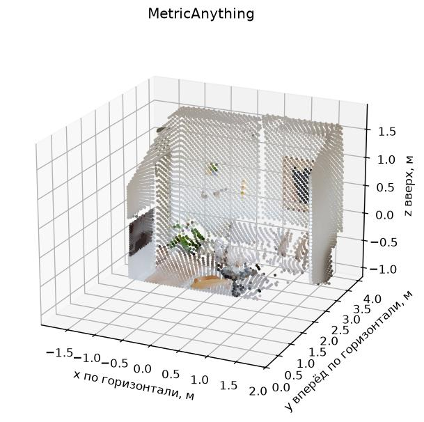
Крен -0.02°, тангаж 0.23°; f = 471.7 px. Оценка неопределённости вертикали: 1.31°. Время 0.129 с; шагов оптимизации 3. Полные массивы и ковариация NPZ (массив хранится локально).
Интерактивное облако с вертикалью · Исходное облако без вертикали. Сохранённые XYZ, масштаб и K моделей глубины не изменены. Ко всем источникам применён один поворот GeoCalib; эталонная вертикаль не используется для подгонки. Высота пола и общий поворот разных фото не определены.

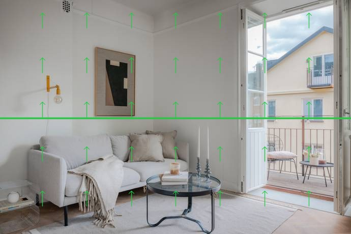
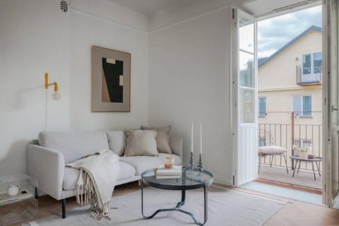
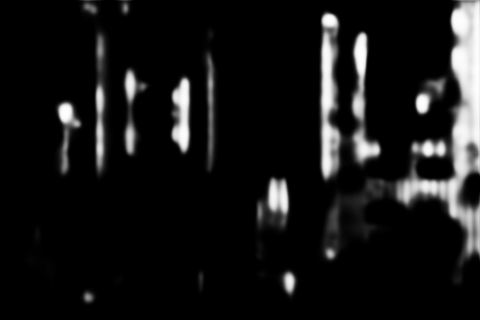
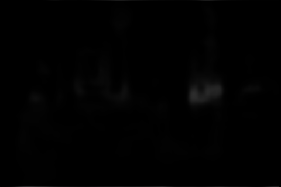
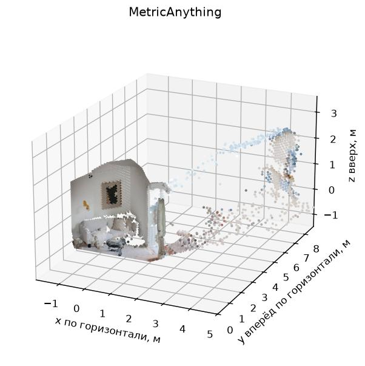
Крен 0.06°, тангаж 0.97°; f = 408.5 px. Оценка неопределённости вертикали: 1.63°. Время 0.164 с; шагов оптимизации 5. Полные массивы и ковариация NPZ (массив хранится локально).
Интерактивное облако с вертикалью · Исходное облако без вертикали. Сохранённые XYZ, масштаб и K моделей глубины не изменены. Ко всем источникам применён один поворот GeoCalib; эталонная вертикаль не используется для подгонки. Высота пола и общий поворот разных фото не определены.

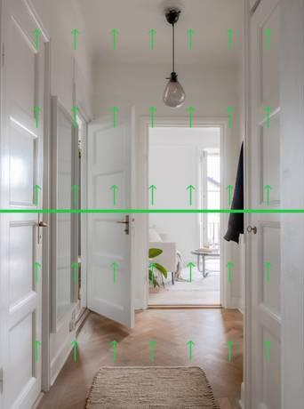
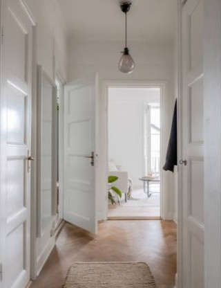
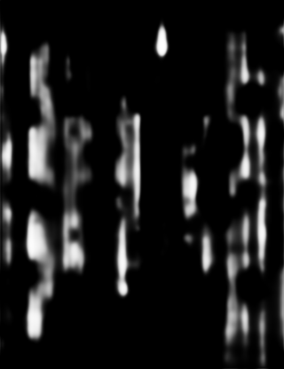
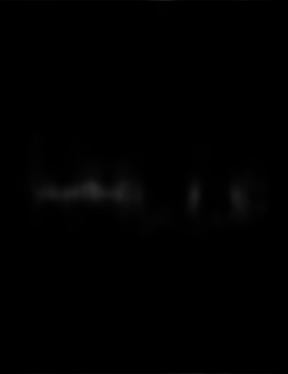
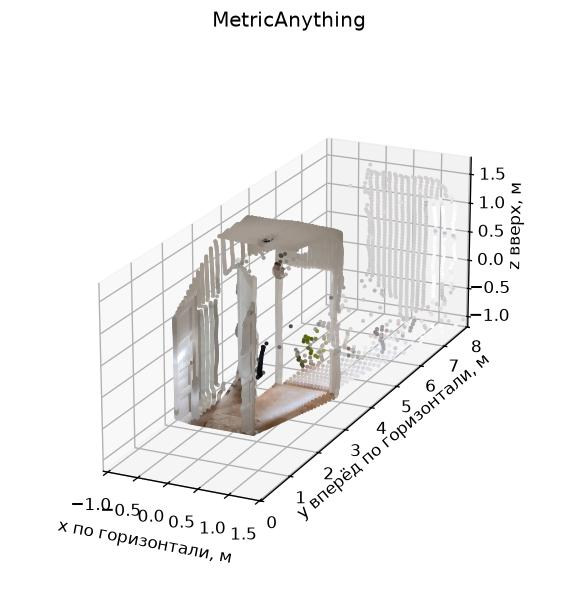
Крен 0.16°, тангаж -0.64°; f = 379.3 px. Оценка неопределённости вертикали: 2.55°. Время 0.147 с; шагов оптимизации 5. Полные массивы и ковариация NPZ (массив хранится локально).
Интерактивное облако с вертикалью · Исходное облако без вертикали. Сохранённые XYZ, масштаб и K моделей глубины не изменены. Ко всем источникам применён один поворот GeoCalib; эталонная вертикаль не используется для подгонки. Высота пола и общий поворот разных фото не определены.
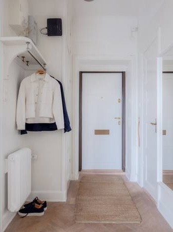
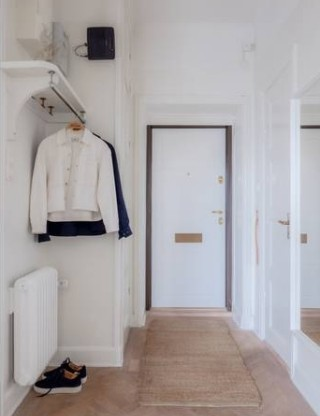
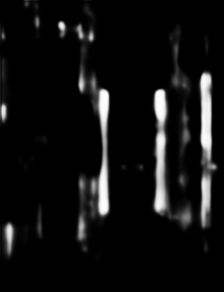
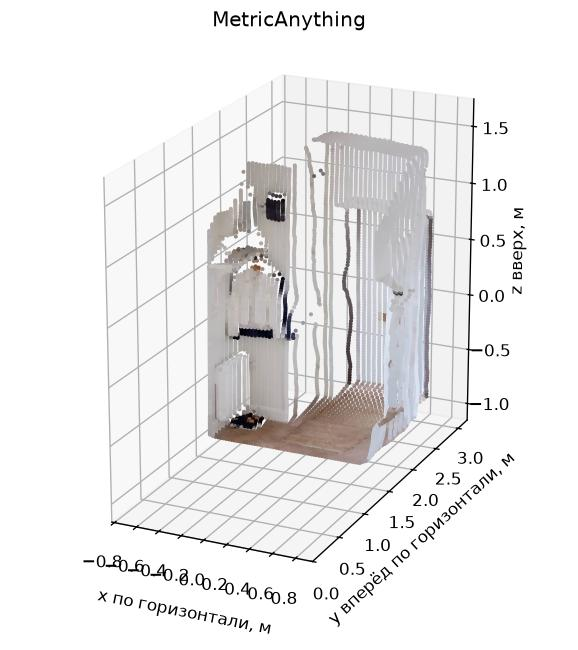
Крен 0.17°, тангаж 1.20°; f = 448.3 px. Оценка неопределённости вертикали: 1.86°. Время 0.153 с; шагов оптимизации 5. Полные массивы и ковариация NPZ (массив хранится локально).
Интерактивное облако с вертикалью · Исходное облако без вертикали. Сохранённые XYZ, масштаб и K моделей глубины не изменены. Ко всем источникам применён один поворот GeoCalib; эталонная вертикаль не используется для подгонки. Высота пола и общий поворот разных фото не определены.
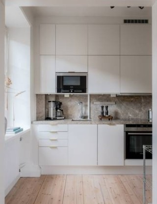
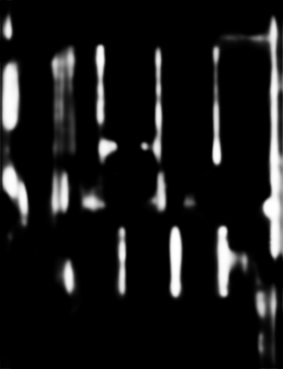
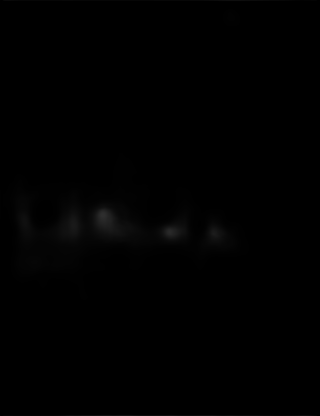
Крен 0.16°, тангаж 1.42°; f = 640.1 px. Оценка неопределённости вертикали: 2.32°. Время 0.183 с; шагов оптимизации 7. Полные массивы и ковариация NPZ (массив хранится локально).
Интерактивное облако с вертикалью · Исходное облако без вертикали. Сохранённые XYZ, масштаб и K моделей глубины не изменены. Ко всем источникам применён один поворот GeoCalib; эталонная вертикаль не используется для подгонки. Высота пола и общий поворот разных фото не определены.

Крен 0.10°, тангаж -0.08°; f = 402.1 px. Оценка неопределённости вертикали: 1.24°. Время 0.150 с; шагов оптимизации 4. Полные массивы и ковариация NPZ (массив хранится локально).
Интерактивное облако с вертикалью · Исходное облако без вертикали. Сохранённые XYZ, масштаб и K моделей глубины не изменены. Ко всем источникам применён один поворот GeoCalib; эталонная вертикаль не используется для подгонки. Высота пола и общий поворот разных фото не определены.
Крен -0.63°, тангаж -0.07°; f = 367.1 px. Оценка неопределённости вертикали: 1.62°. Время 0.145 с; шагов оптимизации 4. Полные массивы и ковариация NPZ (массив хранится локально).
Интерактивное облако с вертикалью · Исходное облако без вертикали. Сохранённые XYZ, масштаб и K моделей глубины не изменены. Ко всем источникам применён один поворот GeoCalib; эталонная вертикаль не используется для подгонки. Высота пола и общий поворот разных фото не определены.
Крен 0.27°, тангаж -0.26°; f = 484.0 px. Оценка неопределённости вертикали: 1.37°. Время 0.140 с; шагов оптимизации 4. Полные массивы и ковариация NPZ (массив хранится локально).
Интерактивное облако с вертикалью · Исходное облако без вертикали. Сохранённые XYZ, масштаб и K моделей глубины не изменены. Ко всем источникам применён один поворот GeoCalib; эталонная вертикаль не используется для подгонки. Высота пола и общий поворот разных фото не определены.

Крен -0.10°, тангаж 0.42°; f = 449.1 px. Оценка неопределённости вертикали: 3.02°. Время 0.141 с; шагов оптимизации 4. Полные массивы и ковариация NPZ (массив хранится локально).
Интерактивное облако с вертикалью · Исходное облако без вертикали. Сохранённые XYZ, масштаб и K моделей глубины не изменены. Ко всем источникам применён один поворот GeoCalib; эталонная вертикаль не используется для подгонки. Высота пола и общий поворот разных фото не определены.

Крен -0.63°, тангаж -0.84°; f = 434.9 px. Оценка неопределённости вертикали: 4.39°. Время 0.150 с; шагов оптимизации 5. Полные массивы и ковариация NPZ (массив хранится локально).
Интерактивное облако с вертикалью · Исходное облако без вертикали. Сохранённые XYZ, масштаб и K моделей глубины не изменены. Ко всем источникам применён один поворот GeoCalib; эталонная вертикаль не используется для подгонки. Высота пола и общий поворот разных фото не определены.

Крен -0.10°, тангаж 0.59°; f = 529.8 px. Оценка неопределённости вертикали: 2.01°. Время 0.197 с; шагов оптимизации 8. Полные массивы и ковариация NPZ (массив хранится локально).
Интерактивное облако с вертикалью · Исходное облако без вертикали. Сохранённые XYZ, масштаб и K моделей глубины не изменены. Ко всем источникам применён один поворот GeoCalib; эталонная вертикаль не используется для подгонки. Высота пола и общий поворот разных фото не определены.

Крен -0.11°, тангаж 1.19°; f = 288.0 px. Оценка неопределённости вертикали: 1.48°. Время 0.135 с; шагов оптимизации 4. Полные массивы и ковариация NPZ (массив хранится локально).
Интерактивное облако с вертикалью · Исходное облако без вертикали. Сохранённые XYZ, масштаб и K моделей глубины не изменены. Ко всем источникам применён один поворот GeoCalib; эталонная вертикаль не используется для подгонки. Высота пола и общий поворот разных фото не определены.
Крен 0.03°, тангаж 0.09°; f = 511.9 px. Оценка неопределённости вертикали: 1.39°. Время 0.140 с; шагов оптимизации 3. Полные массивы и ковариация NPZ (массив хранится локально).
Интерактивное облако с вертикалью · Исходное облако без вертикали. Сохранённые XYZ, масштаб и K моделей глубины не изменены. Ко всем источникам применён один поворот GeoCalib; эталонная вертикаль не используется для подгонки. Высота пола и общий поворот разных фото не определены.

Крен 0.30°, тангаж 0.03°; f = 622.7 px. Оценка неопределённости вертикали: 1.70°. Время 0.196 с; шагов оптимизации 7. Полные массивы и ковариация NPZ (массив хранится локально).
Интерактивное облако с вертикалью · Исходное облако без вертикали. Сохранённые XYZ, масштаб и K моделей глубины не изменены. Ко всем источникам применён один поворот GeoCalib; эталонная вертикаль не используется для подгонки. Высота пола и общий поворот разных фото не определены.
Крен -0.39°, тангаж -0.42°; f = 449.3 px. Оценка неопределённости вертикали: 1.39°. Время 0.129 с; шагов оптимизации 3. Полные массивы и ковариация NPZ (массив хранится локально).
Интерактивное облако с вертикалью · Исходное облако без вертикали. Сохранённые XYZ, масштаб и K моделей глубины не изменены. Ко всем источникам применён один поворот GeoCalib; эталонная вертикаль не используется для подгонки. Высота пола и общий поворот разных фото не определены.
Крен -0.22°, тангаж -0.10°; f = 567.5 px. Оценка неопределённости вертикали: 1.50°. Время 0.161 с; шагов оптимизации 5. Полные массивы и ковариация NPZ (массив хранится локально).
Интерактивное облако с вертикалью · Исходное облако без вертикали. Сохранённые XYZ, масштаб и K моделей глубины не изменены. Ко всем источникам применён один поворот GeoCalib; эталонная вертикаль не используется для подгонки. Высота пола и общий поворот разных фото не определены.